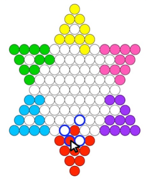

Chinese Checkers
Developing a Python implementation of Chinese Checkers with AI decision-making, multiplayer support, and an interactive graphical interface.
Overview
I built a Chinese Checkers application in Python and Tkinter with local multiplayer and computer-controlled opponents. I implemented the game engine, interface, legal move generation, turn management, win detection, and Minimax-based AI and hints.
Software Design
I used an object-oriented structure to separate game state, interface behavior, and gameplay logic.
The board’s offset rows required coordinate conversions between game positions and screen locations. I used those conversions for rendering, mouse selection, and move validation.
I implemented adjacent moves and chained jumps, along with turn progression and win detection. The interface highlights legal moves and supports animations and timed turns.


AI & Algorithms
I implemented Minimax to evaluate future game states and choose moves for computer-controlled opponents. The hint system uses the same search framework to suggest candidate moves to human players.
Results
The completed application integrates human and computer-controlled gameplay in one interface, including legal-move highlighting, chained jumps, turn management, and win detection. Reusing the search framework for both opponents and hints kept the AI behavior within the same game engine.